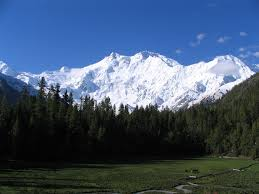

Gasherbrum

Gasherbrum es un conjunto de montañas que se encuentran en la zona noreste del Glaciar Baltoro, en la cordillera del Karakórum perteneciente al Himalaya. El macizo contiene tres de las montañas más altas del mundo. El Gasherbrum se dice que significa "montaña brillante", presumiblemente en referencia a la muy visible cara del Gasherbrum IV; pero, en realidad significa en balti "montaña bonita" de "rgasha".En 1856, Thomas George Montgomerie, un teniente-ingeniero real británico y miembro del Gran Proyecto de Topografía Trigonométrica de India, avistó un grupo de picos en el Karakórum desde una distancia de 200 km. Dio nombre a cinco de estos picos K1, K2, K3, K4 y K5 donde la "K" hacía referencia a Karakórum. Hoy, el K1 se conoce como Masherbrum, el K3 es el Broad Peak, el K4 es el Gasherbrum II y el K5 es el Gasherbrum I. Sólo el K2, el segundo pico más alto del mundo conserva el nombre dado por Montgomerie.
 Inicio
Inicio
 Annapurna
Annapurna
 Daulaghiri
Daulaghiri
 Everest
Everest
 k2
k2
 BroadPeak
BroadPeak
 Cho-Oyu
Cho-Oyu
 GasherbrumII
GasherbrumII
 Kanchenjunga
Kanchenjunga
 Lhotsel
Lhotsel
 Makalu
Makalu
 Manaslu I
Manaslu I
Nangaparbat
 ShishaPangma
ShishaPangma